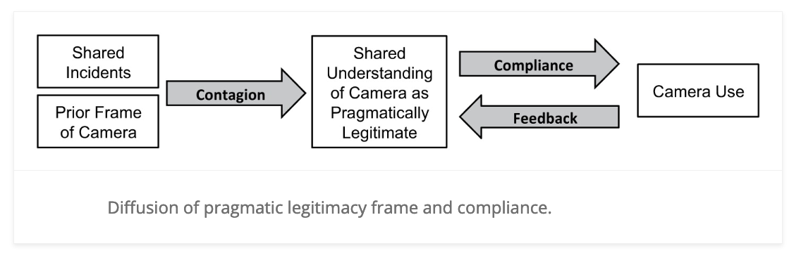
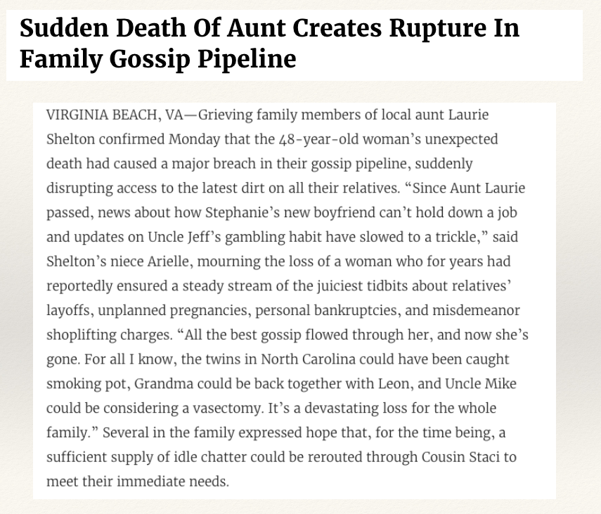
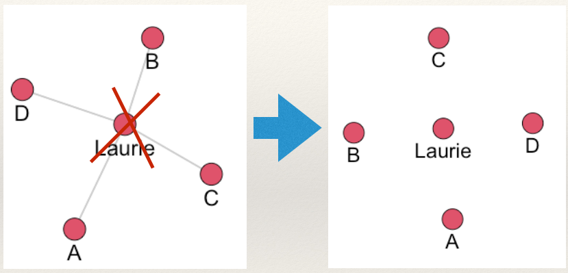
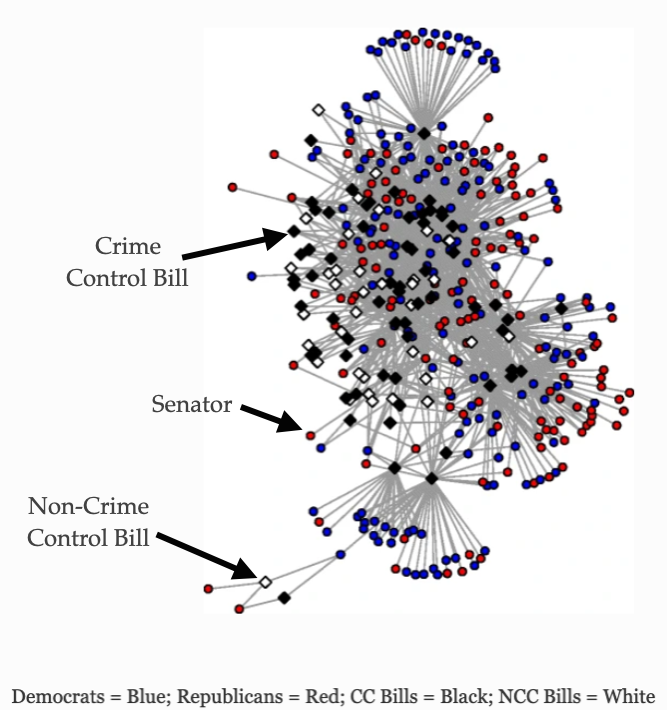

Introduction to Social Network Analysis for Crime Analysts
Why add “social network analysis” to your crime analyst toolkit? To answer this question, it probably helps to know what social network analysis is! In this chapter, I want to introduce you to how people who study networks think about research problems and the types of data they use to examine these research problems from a network perspective. As such, we have the following learning goals:
By the end of the chapter, be able to answer these questions:
What is “network science” and how is it different from “usual” research?
What do networks “look like”?
Motivating Question and Empirical Example
To get a sense of what we do when we study networks, let’s start with a motivating question:
What determines whether a police officer endorses the use of body-worn cameras and whether they activate their body-camera during an incident?
Most accounts tend to focus on several factors:
- Individual characteristics (e.g. age, experience)
- Situational characteristics (e.g. time of day, incident)
In other words, usually the explanation focuses on something about the person and/or something about the situation. Both of these explanations, though, tend to think about units (in this case police officers) as independent. For example, police officers endorse body-worn cameras because of their age or because of the characteristics of their beat. This may be true, but the underlying assumption is that officer endorsement is entirely independent from other officers in the department. This is the assumption of independence across units and underlies the vast majority of research in criminology and criminal justice.
In the study of networks, we are interested in the dependence between units as an explanatory tool. That is we are interested in the network!
For example, in a study by Young and Ready (2015) entitled, Diffusion of Ideas and Technology: The Role of Networks in Influencing the Endorsement and Use of On-Officer Video Cameras, the authors adopted a network perspective to examine two research questions:
- How do police officers “frame” body-worn cameras?
- Is the meaning officers attribute to cameras created and transmitted in groups?
To answer these questions, they proposed the following model:
In this model, they argued that police officers’ views of body-worn cameras influence whether they use their cameras in incidents. But, where do these views come from? The authors proposed a contagion process whereby officers who shared incidents together exchanged views about the legitimacy of body-worn cameras. That is, much like a cold can be spread by contagious people, views about body-cameras are spread between officers. The medium by which these views spread is a social network.
Thus, the network matters! Rather than focusing on differences between individuals in terms of some attribute or situational experience, the study by Young and Ready (2015) was explicitly focused on the role that relationships between officers play in spreading attitudes, ideas, beliefs, etc. about body-worn cameras. Thinking about the problem in this way is an example of using the lens of a network perspective and is characteristic of what is called Network Science.
Network Science
Network science is an approach to science that views the world as being composed of systems of actors connected through relational ties (i.e. a network). Stop for a moment and ask yourself the following question:
- What are some ways people can be connected?
All of these various connections you thought of fit within the domain of study that is network science.
Network science takes these relational structures as the primary domain of interest. In so doing, research questions take the following forms:
- How does the network matter?
- Here the network is an independent variable.
- In the case above, the network of shared incidents was as independent variable that influenced views of body-worn cameras.
- What effects the network?
- Here, the network is a dependent variable.
- For example, do younger individuals who are involved in crime have more co-offenders?
Thinking about research problems and crime analysis through a network perspective lens means that we frame our inquiry around these basic questions. That is, “how does the network matter?” and/or “what effects the network?”.
Network Analysis
Network analysis is the set of tools used to study relational variables. That is, a variable that measures the relationship between entities (as opposed to the attributes of the entities themselves). In SNA, relational variables are used to describe the ties, interactions, or connections between actors (nodes) in a network. These variables do not focus on the individual characteristics of the actors but rather on how they relate to one another. For example, in a criminal network, a relational variable could be the frequency of communication between two individuals, the level of trust between them, or the type of criminal activity they collaborate on.
How is a relational variable different? The main contrast to relational variables is attribute variables (or actor variables), which describe the properties or characteristics of the entities themselves. These might include an individual’s age, gender, occupation, or criminal history. Attribute variables provide information about the individual actors (nodes), while relational variables focus on the connections between them. In SNA we commonly use attribute variables, but it is important to keep in mind that these are analytically separate from relational variables.
Network analysis is the set of tools used to study relational variables. Just as there are tools for examining attribute variables (e.g. the correlation between age and criminal offending), SNA encompasses a set of methods for systematically understanding and identifying connections among actors (i.e. relational variables).
Consider three different questions:
- Are kids who are risk-seeking more likely to drink alcohol?
- Are kids who have friends that drink alcohol more likely to drink alcohol?
- Are kids who drink alcohol more likely to be popular?
Now, think about this:
- How are these questions different?
- Is the causal logic the same?
- Are the policy implications the same? What are the variables?
Take some time to think it through?
Done? Good! Let’s examine these questions closer.
The questions differ substantially in causal logic:
In the first question, the independent variable is risk-seeking and the dependent variable is alcohol consumption. In the second question, the independent variable is alcohol consumption among friends. These two questions have different policy implications. The first would focus on reducing risk-seeking. The second would focus on disrupting the network. As a result, how we think about the problem has implications for which policy we design to address the problem.
In the third question, the independent variable is alcohol consumption and the dependent variable is a network variable, popularity. The policy implication here would be to reduce alcohol consumption if we were concerned about who (or who is not) popular.
Again, network science is about focusing on the relational aspect fo what is being studied. Think about a separate example from America’s “finest news source,” the Onion. As you read through it, ask yourself: “what does this story tell you about the relational structure of information transmission in the Shelton family?”:

What does this story tell us about the relational structure of information transmission in the Shelton family? It is vulnerable! The network was flowing with juicy gossip until Aunt Laurie passed.
To understand, we can draw a picture illustrating the network described in the story:

What makes it vulnerable? All of the juicy gossip flows through aunt Laurie. She is a hub that everyone has to interact with to get information. What happened when aunt Laurie died? Communication is completely disrupted!

What could the Shelton family have done to make the network more resilient to disruption? Consider a separate network arrangement:

Now what happens when aunt Laurie dies?

Communication is not disrupted. This is because the network now has ties which make it less vulnerable to disruption. In network science jargon this is called redundancy and applies not only to social networks but any relational structure (e.g. electrical powerstation infrastructure).
The point here is this: these topics are inherently relational. They are not about comparing different, independent units. In other words, we are not comparing attributes of the individuals involved (e.g. who is more prone to gossip). The questions (and in the case of the Onion article, the joke) are about dependence between units.
Network Science and Network Analysis
In doing network research (i.e. asking questions that involve networks and performing network analysis to answer the question), it is important to consider two crucial ideas:
- Conceptualization
- The process of defining what a concept is by creating a conceptual definition.
- Operationalization
- The process of creating a concrete measure following a conceptual definition of a concept.
Network science conceptualizes theoretical concepts that are inherently relational and operationalizes these constructs by drawing on the formal properties of graphs.
Let’s take an example. Suppose we are interested in the concept of power in a gang. Some gang members may be more powerful than others and we may want to develop an intervention that focuses on the most powerful members. But, what does it mean to say that someone is powerful? There are many different ways to conceptualize power.
One way is to think about it is as being a central member of the gang. So, we could create a conceptual definition: powerful gang members are those who are central to the gang network. Ok, so how do we measure it? In other words, how do we operationalize power based on our conceptual definition? We could say that individuals who are central in the gang are those who are perceived as being central. So, we could ask gang members “who is the most central person in your gang?”. Then, we would have an operationalization of power in the gang.
To illustrate, consider a case study by Papachristos (2006) of a gang operating in an urban neighborhood. Law enforcement agencies had been investigating the gang for months, but traditional surveillance methods were failing to identify the key players who were directing most of the criminal activities. To tackle this, researchers decided to take a network perspective to the problem, guided by the conceptual definition that power within the gang is held by those perceived as central. They conducted interviews with current and former gang members, asking them directly, “Who is the most important person in your gang?” This simple question revealed individuals who were not initially flagged by police investigations but were considered highly influential by their peers. Upon further analysis, it became clear that these individuals controlled significant communication pathways and resources within the gang. By focusing on those perceived as central, law enforcement was able to disrupt key relationships and dismantle the gang’s leadership structure, demonstrating the effectiveness of operationalizing power through social perception.
Why does this matter? As you develop as a crime analyst, you will come to see the value of learning the process of identifying a concept, developing a conceptual definition, and creating an operational measure is an essential skill to hone.
What makes SNA so powerful is that it allows us to use concepts and tools from mathematics to operationalize theoretical constructs that are relational, avoiding much of the murkiness of many concepts in the social sciences that are difficult to measure. To get a sense of how this works, we need to review some basic data elements.
Basic Data Elements
What do networks “look like”?
Network (relational) data represents:
Connections (also called ties, arcs, edges, lines, ties) among,
Entities (also called nodes, vertices, actors, points, dots)
To be consistent, I will use the term node to refer to entities and edge to refer to connections.
A node can be anything that can link to something else. Anything.
An edge can be anything that can record a connection between nodes. Anything.
Examples:
In a friendship network the nodes are individuals and the edges are friendships.
In a co-offending network the nodes are individuals and the edges are offenses. That is, individuals are connected through offenses in which they both were present.
On a graph, nodes are represented by points and edges are represented by lines.
Edges
Directionality
Edges can be undirected, where an edge from A to B is the same as an edge from B to A:
or directed, where an edge from A to B is separate from an edge from B to A:
The difference is important. For example, suppose the edges of the networks below measure communication of information.
How are these structures different?
In the undirected network (on the left), all information can reach all three groups. To see this, start at any node and you can reach (by tracing) any other node following the lines.
But, in the directed network (on the right), information is “stuck” in the three clusters. Why?
This is because information comes from the center node and goes to each cluster. And it does not leave. Even though they all communicate in each cluster, information does not leave the clusters. To see this, start with any node and follow the arrows. Once you get into a single cluster, you cannot leave!
Value
Edges can take on different values. They can be:
- Binary (0 or 1; present or absent)
- Valued integers (0, 1, 2,…)
- Continuous weights (0.24, 1.79,…)
- Signed (+ or -)
For example, in a friendship network the tie could measure whether we are friends or not (binary), how strong our friendship is (either using integers or continuous measures), or we whether we like (signed +) or dislike (signed -) each other.
Meanings
Edges can have different meanings and therefore can be of different types:
- Social relationships (e.g. sister, friend, likes, knows)
- Interactions (has sex with, talks to, seeks advice from)
- Flows (diseases, attitudes, information)
These different types are important to keep in mind when we are thinking about what a tie represents.
Nodes
Modes/Node Partitions
Networks can differ with respect to the sets of nodes that define them. This refers to the modes of the network or the partitioning of the nodes:
- One-mode/uni-partite (connections among one type of node). For example, A and B are friends. There is only one group of nodes, individuals.
- Multi-mode/multi-partite (connections among two or more types of nodes). For example A and B attend protests 1 and 2. There are two sets of nodes, individuals and protests. A and B are connected through their shared participation in the protests. The figure below illustrates:
As an example, the network for the study discussed above by Young and Ready (2015) is shown below:

In this network, incidents (white circles) connect officers (squares and triangles). This is a two-mode/bipartite network because there are two sets of nodes: incidents and officers. The plot shows two types of officers, those who were in the treatment condition of the study (i.e. they were assigned a body-worn camera) and those who were in the control condition (i.e. they did not receive a camera). The focus of the study was how exposure to body-cameras during incidents influenced views, especially for those who were not assigned a camera.
As another example, Shjarback and Young (2018) examined the tendency for United States senators to sign different types of legislation. Specifically, the authors were interested in whether crime control legislation was more likely to be signed if individuals were from the same party.

In this network, there are two sets of nodes: bills (crime control and non-control) and senators (Democrats and Republicans). Crime control bills are the black squares and non-crime control bills are the white squares. Republication senators are shown as red circles and Democratic senators are shown as blue circles.
Plexity
Networks can also differ with respect to the types of edges.
- Simplex (connections among nodes are of one type)
- Multiplex (connections among nodes are of multiple types)
Test Your Knowledge
- What is the difference between conceptualization and operationalization?
- Can you provide an example of how a concept, such as “power” in a gang, can be operationalized using social network analysis?
- How does network science differ from traditional social science approaches?
- What is a relational variable, and how does it differ from an attribute variable?
- Give an example of a relational variable in a criminal network and explain how it differs from a node’s attribute.
- How can a network be treated as an independent variable? Provide an example.
- How can a network be treated as a dependent variable? Provide an example.
- Explain the difference between a one-mode network and a two-mode (bipartite) network. Provide an example of each.
- What are the implications of having a directed versus undirected network?
- What is the difference between binary, valued, and signed edges? Give an example of each.
- What is a “vulnerable” network, and why is identifying vulnerable points important in crime analysis?
- Based on the example of the gossip network above, explain how network redundancy can protect against disruption. How could this concept be applied to criminal networks?
- How can visualizing a network provide insights that may be difficult to see through traditional data analysis methods?
Summary
We started this chapter by asking: why do “social network analysis”? This chapter has sought to introduce the logic of network science so as to help you think about research problems through a network lens. We then examined some of the building blocks of network analysis to get at the question of “what networks look like”.
In the next chapter, we will delve deeper into the theoretical background of network science.